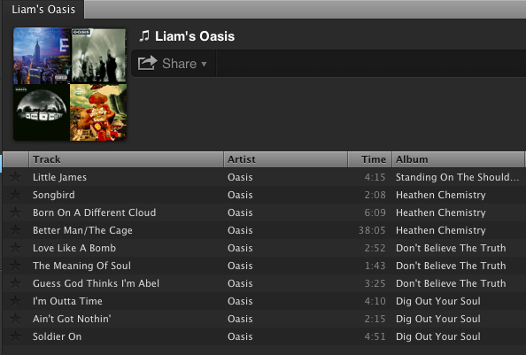
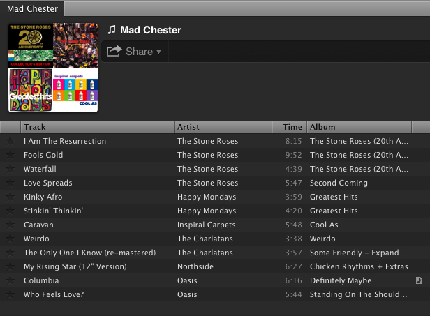

New Spotify Impressions
So I got an invite to the new U.S. Spotify release last Saturday, and after using it for a few days here's what I'm thinking. My only past experience with this kind of music streaming service was LaLa.com. I really enjoyed the free option, where you could stream entire albums, EPs, etc. (and all in a consequence-free environment ;). Of course it had a massive catalog, and the ability to view user comments (which were often worth reading)...
Needless to say - I heard a lot of music there that I wouldn't have otherwise. So, with LaLa.com as my basis, the first difference I noticed with Spotify was needing to install an application on my computer. But the result is that now I can access my music much more quickly, since there are no page-loading times to deal with.
Another thing is that Spotify *does* deliver a nice, easy-to-use interface. The Mac version I have reminds me of a mix between iTunes and Garageband. It's also as fast as they say. One thing I don't like is that I can't find a way to save albums easily when listening to them. It seems I have to make a playlist and add the songs individually, which is sometimes more work than it's worth...
But the main thing Spotify has got me doing now for about the 1st time is making new playlists. It's been really fun to quickly put together some playlists centering on a theme. For example, the 1st one I made answers the question: What songs did Liam write when he was in Oasis? The answer:

It's 10 songs exactly, just like an album in itself. And I made it - quickly and easily :) One funny thing is that when I Googled this question, a top result was this page. You'll notice that none of the answers are correct, other than mentioning "Little James" as one of the songs!
The second miggity-mix I made was to compile the songs I'd want to include if there was a cover band called "Mad Chester" :) This hypothetical band would cover the (main) songs (and other nuggets) from England's "Madchester" scene in the late '80s - early '90s. I think that'd be really fun, and it'd look like this:

I guess the main thing I don't like on the "free" version is the inclusion of ads about every 3 songs or so. Although often they're actually tips on using (or upgrading) Spotify, they also run "ads" for other albums! So that's weird to hear other music thrown in while listening to an album. So far I've got gotten a pop-rock type song, which was quite out of place while streaming the new Peaking Lights album.
Surprisingly it's also an "intelligent" advert, so if you mute the sound the ad freezes until you add volume back! And yet in spite of this, I'm still not sure if I'll be upgrading to a paid version any time soon (there's just something about free music). In any case, I'm definitely glad to have something like this around now.